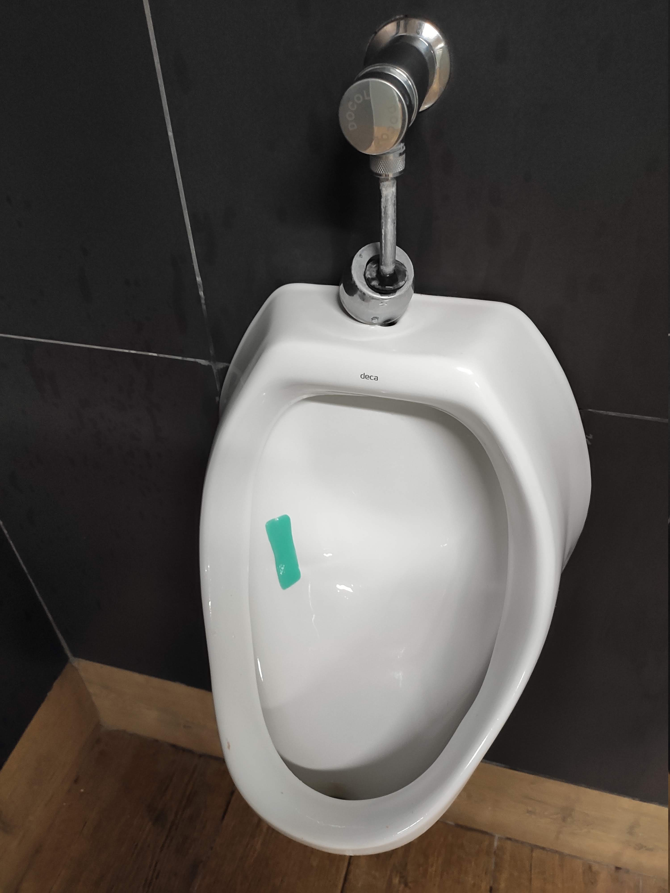
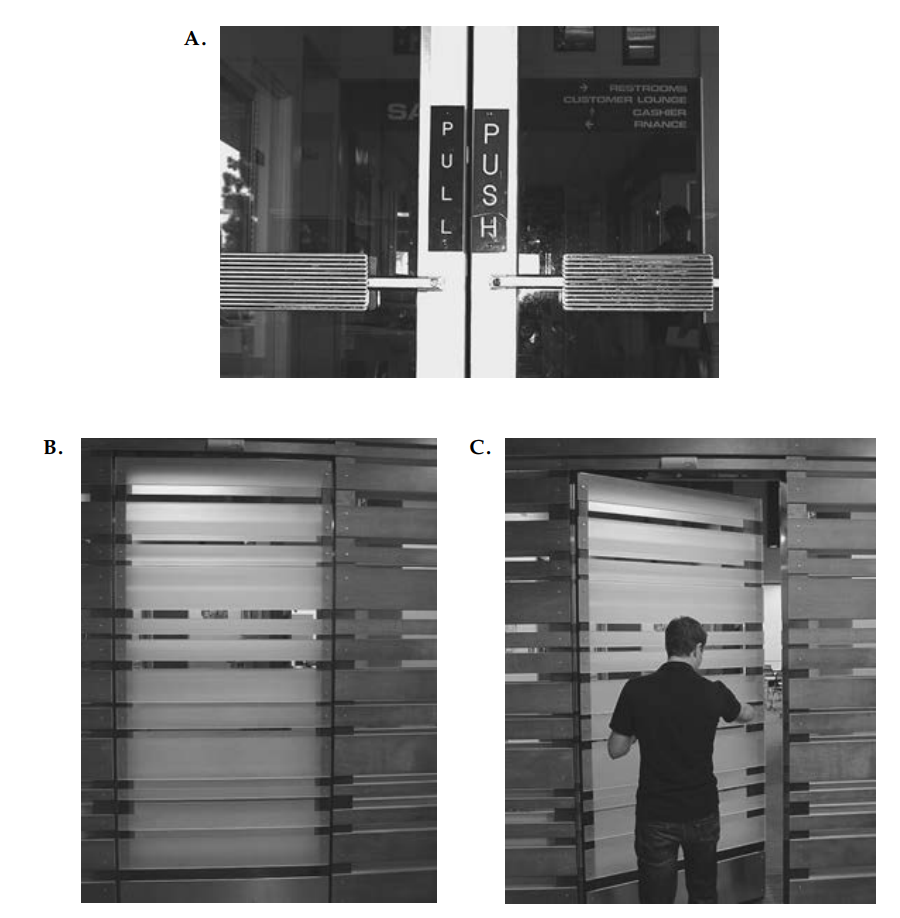
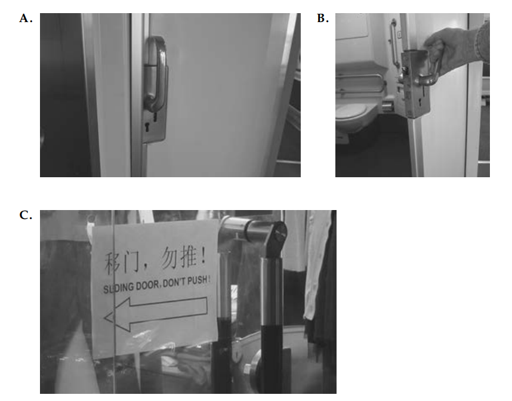
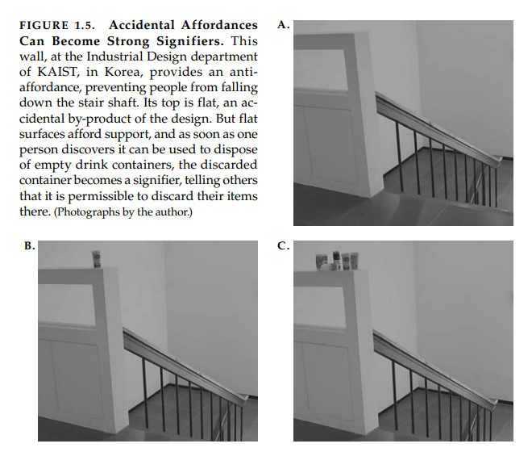
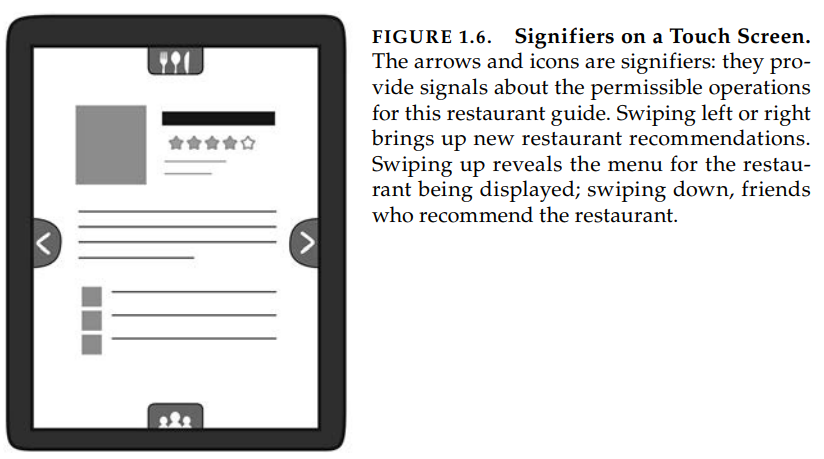
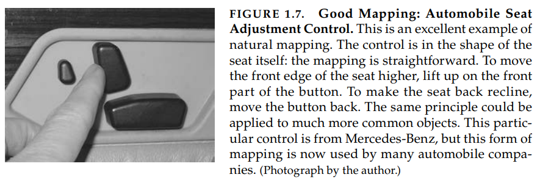

Aula 8 (2019-05-16)
Principios fundamentais de interação
Ótimos designers produzem experiências agradáveis. Experiência: notem a palavra. Engenheiros tendem não gostar disso, é muito subjetivo.
Experiência é crítico para determinar o quão carinhosamente pessoas relembram suas interações: a interação foi positiva no geral, ou foi frustrante e confusa? Quando nossa tecnologia se comporta de maneira não interpretativa, nós podemo nos confundir, frustrar-nos e até ficamos com raiva — todas são emoções negativas. Quando existe entendimento isso pode gerar uma sensação de controle, maestria, satisfação e até orgulho — todas emoções positivas. Cognição e emoção estão fortemente entrelaçadas, isso significa que os designers precisam projetar com ambas em mente.
Quando interagimos com um produto, precisamos descobrir como ele funciona. Isso significa descobrir o que ele faz, como ele funciona e quais operações são possíveis: "descoberta" (discoverability). Descoberta resulta da aplicação apropriada de cinco conceitos psicológicos fundamentais: "conformidades" (affordances), significadores (signifiers), restrições (constraints), mapeamento (mappings) e feedback. Mas existe um sexto princípio: modelo conceitual do sistema (conceptual model of the system). O modelo conceitual provê o verdadeiro entendimento.
"Conformidades" (Affordances)
Vivemos em um mundo cheio de objetos, muitos naturais e também artificiais. Todo dia encontramos vários deles e muitos deles são novos para nós. Muitos deles são parecidos com outros que nós já conhecemos, mas muitos outros são únicos, inéditos, mesmo assim conseguimos manuseá-los bem.
Como fazemos isso? Por que assim quando encontramos vários objetos naturais não usuais nós sabemos interagir com eles? Por que isso também acontece com objetos artificiais (feito por humanos por exemplo)? As respostas vem de alguns princípios básicos. Alguns dos mais importantes são princípios que vem da consideração de conformidades (affordances).
O termo conformidade se refere a relação entre um objeto físico e uma pessoa (nesse sentido, qualquer agente que interage, como animal, humano ou até robôs). Uma conformidade é a relação entre propriedades de um objeto e a capacidade do agente que determina como o objeto pode ser usado.
Uma cadeira conforma (permite, "é para") suporte, portanto, conforma sentar. A maioria das cadeiras também podem ser carregadas por uma pessoa (elas conformam/permitem carregar), mas algumas podem apenas ser carregadas por uma pessoa muito forte ou um conjunto de pessoas. Se pessoas muito jovens ou relativamente fracas não conseguem levantar uma cadeira, para essas pessoas, a cadeira não tem conformidade para levantar.
A presença de uma conformidade é juntamente determinada pelas qualidades do objeto e as habilidades do agente que esta interagindo. Estamos acostumados a pensar que propriedades são associadas com objetos. Mas conformidade não é uma propriedade. Uma conformidade é um relacionamento. Para uma conformidade existir, vai depender das propriedades do objeto e do agente.
Exemplo (vidro)
Vidro permite (conforma) transparência. Ao mesmo tempo, sua estrutura física bloqueia a passagem da maioria dos objetos físicos. Como resultado, vidro permite ver veios por meio dele e também permite suporte, mas não permite a passagem da maioria dos objetos físicos. O bloqueio da passagem pode ser considerado uma anti conformidade (anti-affordance) — a prevenção de uma interação.
Para ser efetivas, conformidades e anti-conformidades precisam ser descobertas — percebidas. Isso é uma dificuldades para o vidro. A razão que gostamos do vidro é sua relativa invisibilidade, mas esse aspecto, tão útil em uma janela, também esconde uma propriedade de anti-conformidade, o bloqueio da passagem. Como resultado, pássaros frequentemente tentar voar pelas janelas e até pessoas se machucam tentando passar por portas de vidro. Se uma anti-conformidade não pode ser percebida, alguma sinalização precisa estar presente: um significador (signifier).
Conformidade existe mesmo se não é visível (assim como anti-conformidade). Para os designers, a visibilidade é crítica: conformidades visíveis permitem dicas fortes para a operação das coisas. Conformidades percebidas ajudam pessoas descobrir quais ações são possíveis sem a necessidade de rótulos ou instruções. O componente de sinalização da conformidade é chamado de significador.
Muitas pessoas tem dificuldades de entender conformidades porque elas são relacionamento, não propriedades. Designer lidam com propriedades fixas, logo existe a tentação de dizer que uma propriedade é uma conformidade.
 mictorio
{kind=link}
Significadores (Signifiers)
Designers tem problemas práticos. Eles precisam saber como projetar coisas e fazê-las entendíveis. Eles logo descobriram que trabalhar com design gráfico para dispositivos eletrônicos, eles precisaram de uma forma de designar quais partes poderiam ser tocadas, deslizadas para cima, baixo ou para os lados, ou tocadas. As ações poderiam ser feita com mouse, dedos, etc. Alguns sistemas respondem ao movimento do corpo, gestos e voz, sem a necessidade de toque com o dispositivo.
Como os designers poderiam descrever o que eles estavam fazendo? Eles confundiam isso com a "conformidade" (affordance), mas na verdade eles estavam usando significadores (signifiers). Eles estavam tentando significar onde o toque deveria ser feito, ao colocar um círculo na tela. A conformidade de toque está na tela inteira, porém o significador "círculo" indica onde deveria ser o toque. Os dois conceitos são diferentes.
Conformidade determina quais ações são possíveis. Significadores comunicam onde a ação deveria ser feita. É preciso os dois.
Pessoas precisam de alguma forma entender o produto ou serviço que eles desejam usar, algum sinal do que isto é para, o que está acontecendo e quais alternativas de ação são possíveis. Pessoas pesquisam por dicas, por qualquer sinal que poderia ajudá-las a lidar e entender. É o sinal que é importante, qualquer coisa que poderia significar informações úteis. Designer precisam prover essas dicas. O que as pessoas precisam e o que os designers precisam prover são significadores.
O termo significador refere-se a qualquer marca, som, qualquer indicativo percebível que comunica apropriadamente comportamento para uma pessoa (ou agente).
Significadores podem ser deliberados e intencionais, como um sinal de empurrar uma porta, mas também podem ser acidentais ou não intencionais, como uma trilha feita por pessoas em campos, mato ou terrenos cobertos por neve, para terminar qual o melhor caminho. Até podemos usar a presença ou não presença de pessoas esperando ônibus em pontos para determinar se o ônibus foi perdido ou não.

Problema de portas: significadores são necessários. Portas podem sinalizar se é possível empurrar ou puxar sem sinais, mas na imagem A acima, ambas portas são iguais, logo foi necessário adicionar um sinal para isso. Nas fotos B e C, não existem nenhum significador visível ou conformidade. Como alguém saberia qual lado empurrar? Tentativa e erro. Quando significadores externos — sinais — precisam ser adicionados para algo simples como uma porta, isso indica um mal design.
Considerar um marcador de livro, um significador deliberado para marcar onde a pessoa parou de ler. Mas a natureza física dos livros também criam um significador acidental, que é indicar quanto de um livro falta para terminar. A maioria dos leitores aprenderam a usar esse significador acidental para ajudar na apreciação da leitura. Poucas páginas para terminar, sabemos que o livro esta acabando.
Livros eletrônicos não tem essa estrutura física de livros de papel, ao menos que o designer do software coloque uma pista, os livros eletrônicos não transmitem qualquer sinal sobre a quantidade de texto para terminar. Isto indica experiências diferentes com livros físicos e eletrônicos (ebooks).

Portas de correr: raramente feitas bem. Nas fotos A e B, mostram uma porta de correr, a maçaneta claramente indica "puxe", mas na verdade é necessário rotacioná-la e a porta desliza para a direita. Já no exemplo C, o problema foi resolvido ao deixar claro: não empurre!
Conformidades representam as possibilidades no mundo de como um agente pode interagir com alguma coisa. Algumas conformidades são perceptíveis, outras são invisíveis. Significadores são sinais. Alguns significadores são sinais, rótulos e desenhos colocados no mundo, como os sinais "empurre" e "puxe" ou "saída" nas portas, ou setas e diagramas que indicam o que é para ser feito, ou outras instruções.

- Conformidades são as possíveis interações entre pessoas e o ambiente. Algumas conformidades são perceptíveis, outra não;
- Conformidades perceptíveis geralmente agem como significadores, mas elas podem ser ambíguas;
- Significadores sinalizam coisas, em particular quais ações são possíveis e como elas devem ser feitas. Significadores devem ser perceptíveis, caso contrário eles falham na sua função.

Mapeamento
Mapeamento é um termo técnico, trazido da matemática que significa o relacionamento entre elementos de dois conjuntos de coisas.
Mapeamento é um conceito importante em design e layout de controles e telas. Quando o mapeamento usa correspondência espacial entre o layout dos controles e os dispositivos sendo controlados, é fácil determinar como usá-los (dispositivos).
Na direção do carro, giramos o volante no sentido horário para virar o carro para direita: o topo da roda move na mesma direção do carro. Podemos notar que outras escolhas poderiam ser feitas. Antigamente, nos primeiros carros, a direção do carro era controlada por uma variedade de dispositivos, barras, rédeas, entre outras.
Todos esses mapeamentos para o controle dos veículos funcionam porque cada um tem um modelo conceitual convincente de como a operação dos controles afetam o veículo. O relacionamento entre o controle e seus resultados é muito fácil de aprender quando existe um mapeamento entendível entre os controles, ações e o resultado pretendido.
Mapeamento natural, que significa usar a vantagem de analogias espaciais, levam entendimento imediato: para mover um objeto para cima, mova o controle para cima. Alguns mapeamentos naturais são culturais ou biológicos, como mover as mãos para cima significa mais, e mover as mãos para baixo, significa menos.
É necessário perceber que muitos mapeamentos são "naturais" mas de fato são específicos de culturas particulares: o que é natural para uma cultura não necessariamente é natural para outra.

Feedback
Feedback — comunicar os resultados de uma ação — é um conceito bem conhecido na ciência de controles e teoria da informação. Mesmo uma simples tarefa de pegar um copo com a mão requer feedback para usar a mão apropriadamente, para apertar o copo e levantá-lo. O sistema nervoso humano é equipado com vários mecanismos de feedback, incluindo visual, áudio e sensores de toque. Mesmo com a importância do feedback, muitos produtos ignoram ele.
Feedback precisa ser imediato: até um pequeno atraso de um décimo de segundo pode ser desconcertante. Se o atraso é muito alto, pessoas geralmente desistem, vão fazer outras atividades. Feedback precisa ser informativo e feedback ruim pode ser pior que nenhum feedback, porque ele distrai de forma não informativa e em muitos casos irritam as pessoas.
Muito feedback pode ser mais chato do que muito pouco. Mas o pior é o feedback inapropriado. Muitos anúncios fazem com que as pessoas ignorem todos, ou todos que forem possíveis, desabilitando dessa forma todos, isso significa que os feedbacks críticos e importantes podem ser perdidos.
Logo feedback precisa ser planejado. Todas as ações precisam ser confirmadas, de uma forma que seja discreta. Feedback precisa ser priorizado, para que informações não importantes sem apresentadas de maneira discreta, mas sinais importantes devem ser apresentados de forma que chame atenção. Feedback é essencial, mas deve ser feito corretamente.
Modelo conceitual
Referências
Livro: The Design of Everyday Things (Cap1)